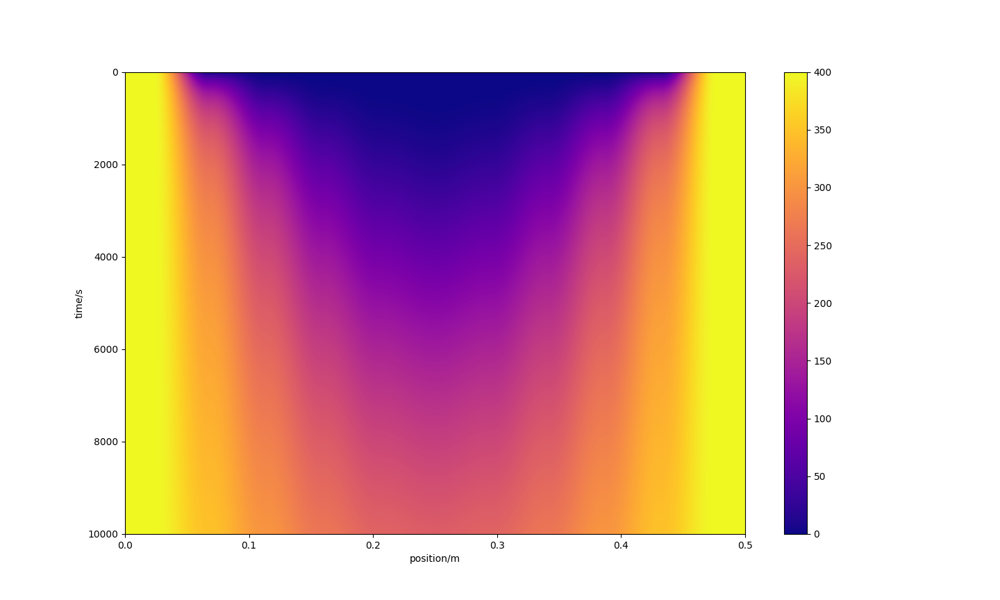

Transient Heat Diffusion Model
Software and Simulation
Mar 2023 - Apr 2023 . 1 mo
Performed a heat transfer analysis of a Nichrome type heating filament. The transient temperature distribution of the filament was modelled as a thin featured 2D element using Python.
A Nickel-Chromium (Ni-Cr) alloy composition was selected for analysis. The filament was assumed to be sufficently thin radially so as this dimension could be neglected, hence proving the analysis with one spacial and one temporal dimension.
The element was modelled under the compositional assumptions of uniform density, specific heat and no internal generation. A 3rd order parabolic differntial equation was implemented using an explicit numerical method.
Results of the simulation were cross refrenced against exsiting data to understand the models validity. It was found that the simulation remained accurate for larger temperatrure ranges part in due to the assumptions stated above.